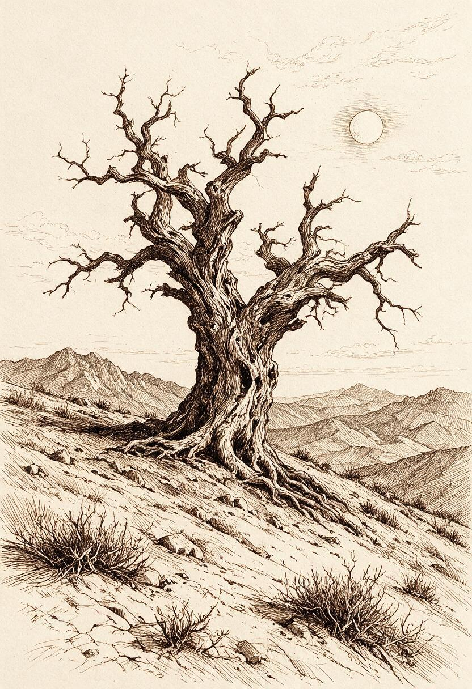
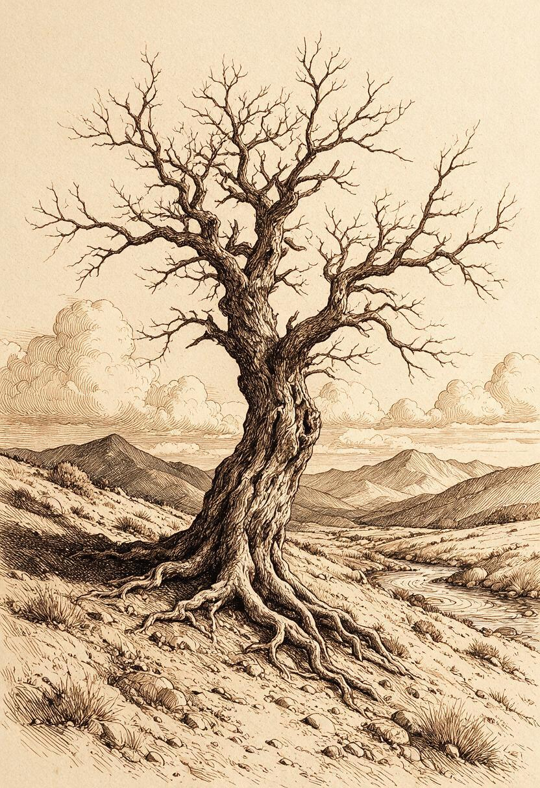

The Unwritten Table
Four beings occupy equal places at the table. Each writes alone. Their separate contributions travel toward a shared book at the center, while the open dome places the small act of writing beneath a much larger unknown.
Weathered Tree Under a Cross-Hatched Sky
Three pen-and-ink studies of a lone tree drawn entirely from line density — cross-hatching and contour building shadow out of blank paper, no wash. The restraint is the subject.


